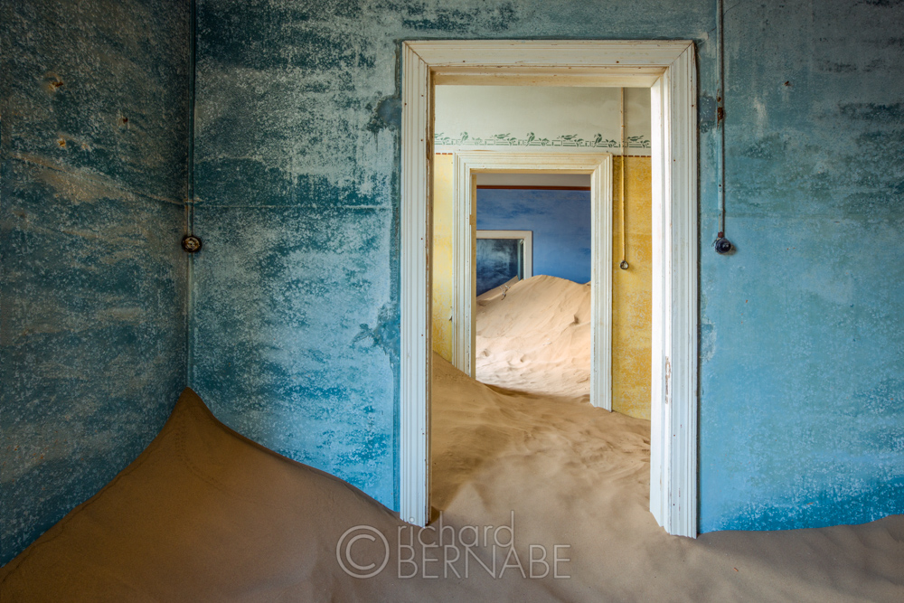
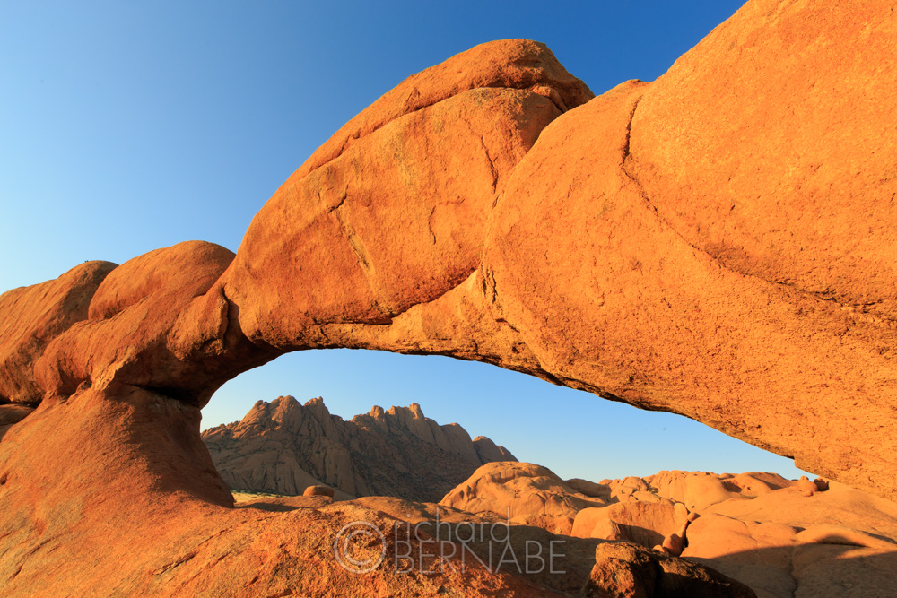
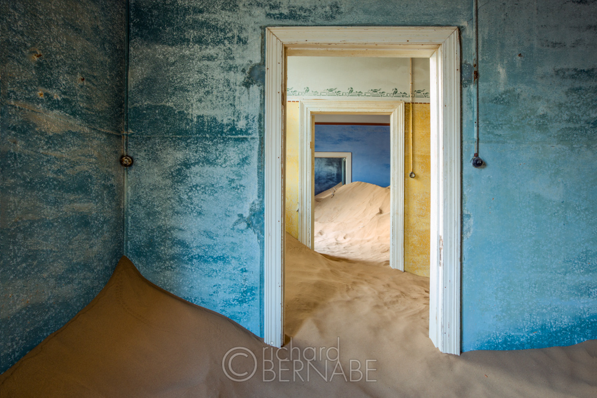
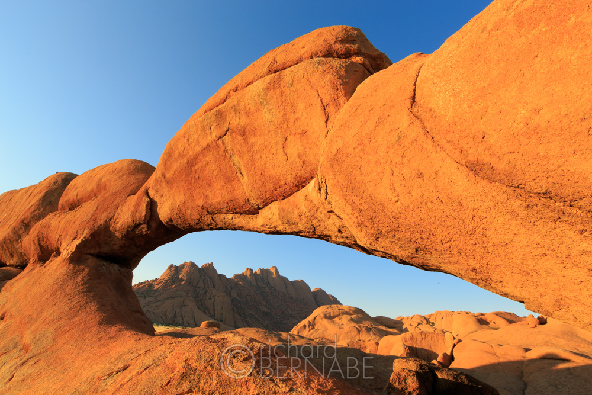

Namibia: 5 Stunning Locations Photographers Must Visit
by harry | apr 22,2022
Etosha National Park
Etosha National Park in the north-central part of Namibia is renown for its amazing wildlife viewing and photography. It’s the most important wildlife sanctuary in Namibia and one of the largest savannah conservation areas in all of Africa. Elephants, zebras, black and white rhinoceros, lions, leopards, cheetahs, herds of springbok, giraffe, and wildebeest all call Etosha home in plentiful numbers.
Namib-Naukluft National Park
Namib-Naukluft is a large National Park that stretches across much of Namibia’s southern coast. Within its boundaries are the world’s oldest desert and largest sand dunes. Sossusvlei, an area in the southern Namib, is characterized by enormous red sand dunes – the largest in the world. The dune complex is often referred to as Sosusvlei, although the name specifically applies to a hard clay pan located in the center of this region as well as one particularly large dune.
Deadvlei is another clay pan near Sossusvlei with dozens of stark looking camel thorn trees entirely surrounded by giant red sand dunes. The early morning and late evening light is best for photography when the warm, low-angled sunlight intensifies the dunes’ bright orange and red hues. Access to the Sosusvlei and Deadvlei area is via the Sesriem gate with a forty-mile drive to the dunes. The final 3 miles (which includes immediate access to both Sosusvlei and Deadvlei) are accessable with a 4WD vehicle with high clearance only. The gate at Sesriem opens at sunrise and closes at sunset.
Quiver Tree Forest and Giant’s Playground
Near the southern Namibia town of Keetmanshoop sits a unique forest of “quiver trees”, one of the most fascinating photography destinations in Namibia. These are not actually real trees, but rather several different species of Aloe, which are large enough to be referred to as “quiver trees” by the locals, since bushmen once used the branches to make quivers for their arrows. The plant’s distinctive candelabra-like shape creates ideal silhouettes against a colorful sunrise or sunset sky. The forest is also the perfect locale for night photography with static starscapes, star trails, and streaking clouds through a moonlit sky.
Kolmanskop Ghost Town
Kolmanskop was once a bustling village built around a productive western Namibian diamond mine. Located just beyond the coastal city of Lüderitz, Kolmanshop is now a surreal ghost town, well preserved by the dry desert climate. When diamond production ceased in the mid 1950s, the citizens of Kolmanskop abandoned the town and left the remaining structures to fend for themselves against the advancing desert sands. What’s left is well preserved today, if not partly overtaken by the desert in many places. The juxtaposition of the manmade and the visable forces of nature make Kolmanskop a favorite photography destination for visitors.
Spitzkoppe Mountains
The Spitzkoppe Mountains are a group of smooth granite peaks and boulders that rise dramatically from the flat Namib Desert. The Spitzkoppe or Matterhorn of Namibia is the highest peak in the group at 5800 feet (1780 meters) iand can be spotted and recognized from many miles away. In addition to the formidable mountains, Spitzkoppe is home to boulder fields and natural arches that can be the source of endless compositional variations. Early morning and late evening are the best times when the low angled sunlight lights of the orange rocks with brilliant color. To gain access to the area during the best light, the nearby campsite is the best lodging option.